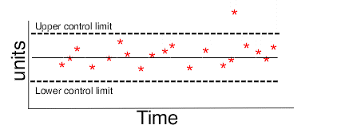

2.
Measurement Process Characterization
2.2.
Statistical control of a measurement process
2.2.2.
|
How are bias and variability controlled?
|
|
|
Bias and variability are controlled by monitoring measurements on
a check standard over time
|
Bias and long-term variability are controlled by monitoring measurements
on a check standard over time. A change in the measurement on the check
standard that persists at a constant level over several measurement
sequences indicates possible:
- Change or damage to the reference standards
- Change or damage to the check standard artifact
- Procedural change that vitiates the assumptions of the
measurement process
A change in the variability of the measurements on the check standard
can be due to one of many causes such as:
- Loss of environmental controls
- Change in handling techniques
- Severe degradation in instrumentation.
|
|
|
The control procedure monitors the progress of measurements on the
check standard over time and signals when a significant change occurs.
There are two control chart procedures that are suitable for this
purpose.
|
|
Shewhart Chart is easy to implement
|
The Shewhart control chart has the advantage
of being intuitive and easy to implement. It is characterized by a
center line and symmetric upper and lower control limits. The chart is
good for detecting large changes but not for quickly detecting small
changes (of the order of one-half to one standard deviation) in the
process.
|
|
Depiction of Shewhart control chart
|
In the simplistic illustration of a Shewhart control chart shown below,
the measurements are within the control limits with the exception
of one measurement which exceeds the upper control limit.

|
|
EWMA Chart is better for detecting small changes
|
The EWMA control chart
(exponentially weighted moving average) is more difficult to implement
but should be considered if the goal is quick detection of small
changes. The decision process for the EWMA chart is based on an
exponentially decreasing (over time) function of prior measurements on
the check standard while the decision process for the Shewhart chart is
based on the current measurement only.
|
| Example of EWMA Chart
|
In the EWMA control chart below, the red dots represent the measurements.
Control is exercised via the exponentially weighted moving average
(shown as the curved line) which, in this case, is approaching its
upper control limit.

|
|
Artifacts for process control must be stable and available
Case study: Resistivity
|
The check standard artifacts for controlling the bias or long-term
variability of the process must be of the same type and geometry as
items that are measured in the workload. The artifacts must be stable
and available to the measurement process on a continuing basis. Usually,
one artifact is sufficient. It can be:
- An individual item drawn at random from the workload
- A specific item reserved by the laboratory for the purpose.
|
|
Topic covered in this section>
|
The topics covered in this section include:
- Shewhart control chart methodology
- EWMA control chart methodology
- Data collection & analysis
- Monitoring
- Remedies and strategies for dealing
with out-of-control signals.
|